本文讨论的内容基于群内小伙伴的问题，此文给出个人理解，欢迎大家进一步讨论。
当待发送的报文成功缓存到底层RAM区以后，同一网段中，不同发送节点之间的发送报文进行CanID仲裁，CanID越小，优先级越高。只有优先级最高的节点才能获得总线的使用权，进而发送报文。
问题：“节点a的发送报文Msg A仲裁失败，此时更高优先级的Msg B也请求发送，当节点a再次请求仲裁，是继续选择Msg A仲裁还是选择Msg B仲裁?"。
举例：
某一时刻（T0），总线空闲，Node a和Node b开始争夺总线使用权，Node a搜索发送缓冲区优先级最高的发送报文（0x10），Node b搜索发送缓冲区优先级最高的发送报文（0x07），通过CanID仲裁（Arbitrate），Node b的0x07报文优先级更高，获得总线使用权，Node b的0x07报文发送到CAN Bus，如下所示：
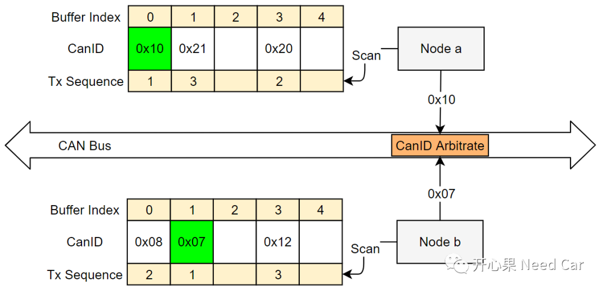
0x07报文发送期间，Node a有一个新的报文请求发送（CanID 0x05）。当总线再次空闲时，Node a和Node b再次竞争总线使用权，Node a搜索发送缓冲区优先级最高的发送报文（0x05），Node b搜索发送缓冲区优先级最高的发送报文（0x08），通过CanID仲裁（Arbitrate），Node a的0x05报文优先级更高，获得总线使用权，Node a的0x05报文发送到CAN Bus，而Node a的0x10报文不得不延迟到下一次总线空闲，再请求仲裁，如下所示：
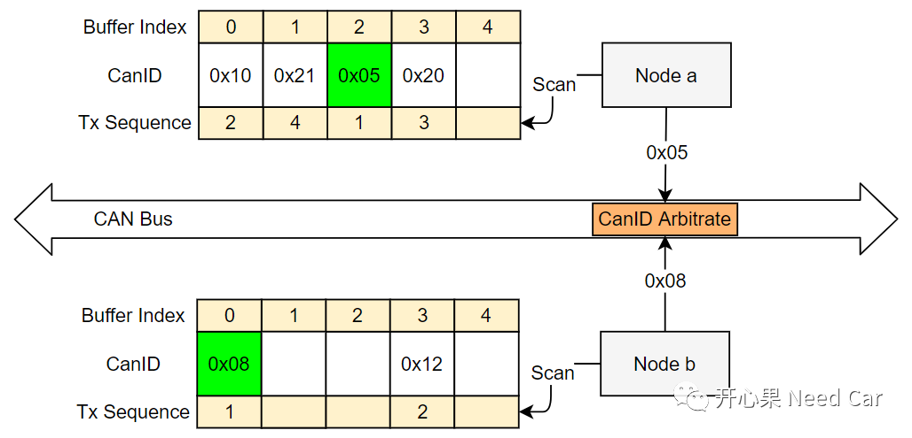
假设这样一种场景：Node a硬件缓存区中待发送报文的CanID均比Node b硬件缓存区中待发送报文的CanID小，即：Node a中待发送报文均会赢得总线仲裁，使得Node b中待发送的报文被推迟，如下所示：
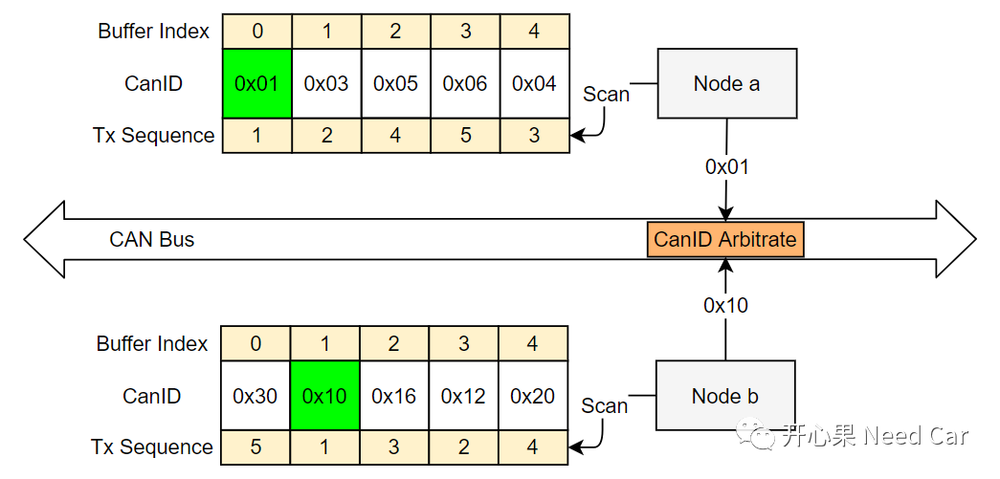
如上，Node b的0x20报文最快需要等到第10次仲裁的时候才能有机会发送到总线，如果在10次的等待期间，再有其他高优先级报文请求发送，0x20的发送时间还得被推迟。如何避免0x20抢不到总线的工况呢？在回答这个问题之前，先回顾几个概念。提示：Node a的这种发送行为称为“babbling idiot”，会极大地影响总线的正常通信行为。11898-1规范中规定了两种总线状态，用逻辑值0表示总线显性状态(dominant)，用逻辑值1表示总线隐性状态(recessive)。
CAN总线空闲状态是指：检测到总线 ≥ 11个位时间处于隐性状态，如下所示：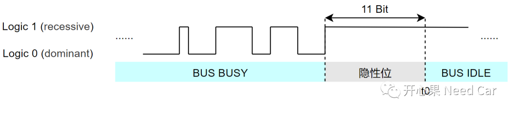
如上，不同节点如果想使用总线，必须在t0时刻之后才能使用。
对于帧间隔（Inter-frame space）分为两种工况：
第一、对于主动错误节点(error-active nodes)/成功接收到一帧报文的节点，两帧报文之间的间隔如下所示：
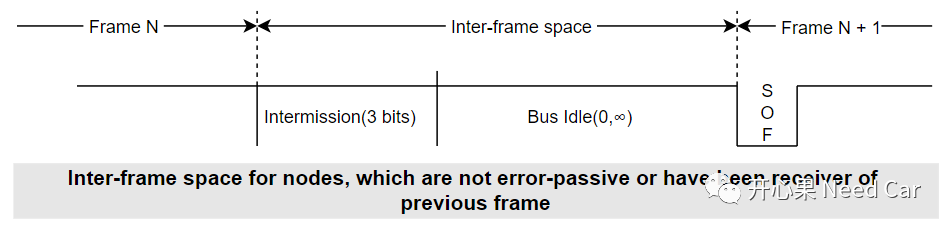
对于主动错误节点/成功接收到一帧报文的节点，11个连续的隐性位如何计算呢？如下所示：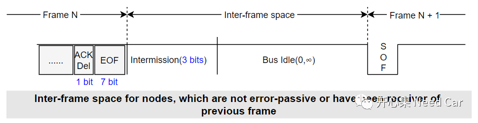
第二、对于发送完一帧报文的被动错误节点(error-passive nodes)，两帧报文之间的间隔如下所示：
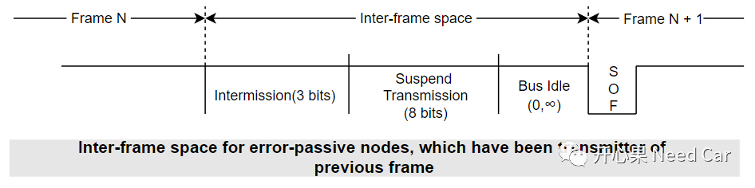
对于发送完一帧报文的被动错误节点，11个连续的隐性位如何计算呢？如下所示：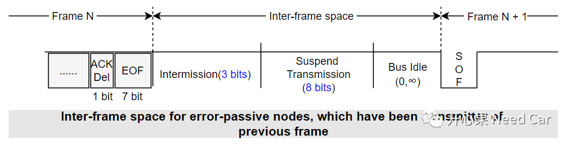
可以看出，主动错误节点与被动错误节点竞争总线使用权时，主动错误节点获取总线使用权的机会更大。
使用“Transmit Pause”功能，什么是Transmit Pause功能呢？就是让节点在11 Bit隐性时间之后多等2bit时间。Node a将0x01报文成功发送到总线以后，t0时刻（11 bit隐性时间），正常情况，Node a和Node b识别到总线空闲，都参与总线使用权争夺，由于Node a使能了Transmit Pause功能，延时2 bit（总共13bit）时间再去争夺总线使用权，即：t1时刻再尝试争夺总线使用权，因此Node b可以先获得总线使用权。因为Node b在t0时刻就拿到了总线使用权，Node b已经在发送0x10报文，所以Node a在t1时刻去争夺总线使用权时，会因总线忙而转入监听模式，如下所示：
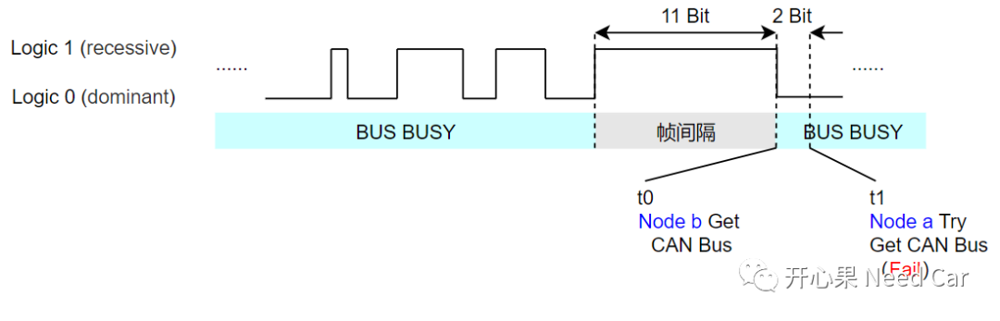
当然，Node a不能每次发送报文都延时2bit，否则Node a将无法竞争过其他节点。Node a成功接收到一帧报文以后，下一帧的发送不再延迟2 bit，只有Node a成功发送一帧时延迟2bit时间。
当Node a成功接收到一帧报文以后，不再延时2bit，0x03报文被发送到总线，之后发送0x04报文时，再延迟2bit时间，Node b可以发送0x12......这样就避免了Node a一直占用总线（发送高优先级报文），Node b无法发送报文的情况。一帧报文的发送需要多少时间呢？先回顾一下CAN Frame格式，标准CAN帧如下所示：
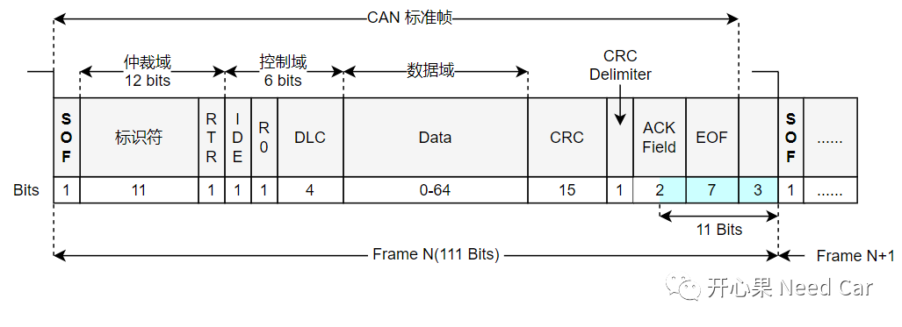
注意：上图中的CAN标准帧共占用108 Bit，而实际数据发送过程中，CanID和数据段的数据不确定，可能会插入填充位（stuff bits，每5个相同的Bit插入一个相反的bit，作用：同步），位流的插入（发送器插入）与去除（接收器去除)示例如下所示：
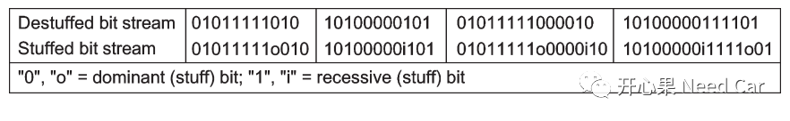
某种数据流中，标准CAN，最多可插入19个bit的填充位，使得一帧标准CAN报文可以传输127Bit（此处是群内小伙伴给的提示）。提示：连续发送时，下一帧的发送需要等到总线空闲，即：至少检测到11个连续的隐性位。其中，ACK Delimiter（1 bit）+ EOF（7 bit）均为阴性位（上图示意主动错误节点的连续报文发送行为）。
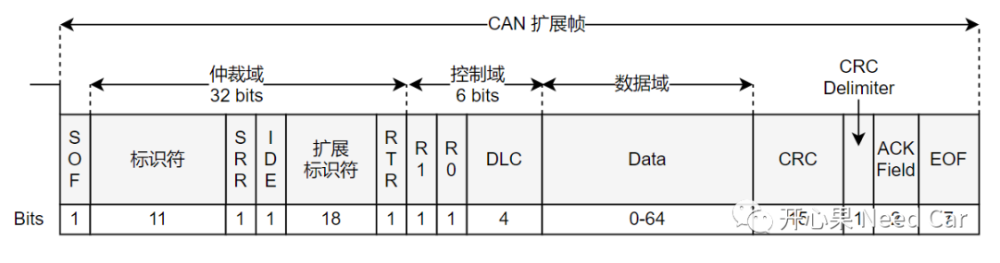
本文不讨论CAN FD。以标准帧为例（处于主动错误节点），主动错误节点连续发送两帧时，第二帧需要等待111bits时间，如果CAN的通信速率为500Kbps，则第二帧报文发送需要等待的最小时间 = （108 + 3(intermission)）/500000 = 0.222ms，第二帧报文发送需要等待的最大时间 = （108 + 19(stuff bits) + 3(intermission)）/500000 = 0.26ms。 平常说：“1ms差不多发送3帧CAN报文”就是这么来的，注意这句话的前提：通信速率、报文类型、节点所处的状态、填充位插入个数。
点击下方关注，一起聊聊Autosar/嵌入式，如果需要，联系作者进群，给你更专业的解答